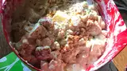

American Potato Salad

| Prep Time: |
Cook Time: |
Additional Time: |
Total Time: |
Yield: |
Servings: |
| 30 mins |
30 mins |
2 Hrs | s
3 hrs |
12 to 15 servings |
12 |
DESCRIPTION
Just a good old fashioned, down home potato salad recipe that brings back memories of picnics in the park and family gatherings. Wonderful as it is or make it your own by adding additional ingredients of your choice.
INGREDIENTS
- 5 pounds red potatoes
- 6 eggs
- 2 cups mayonnaise
- 1 onion, diced
- 2 green onions, thinly sliced
- 1 small green bell pepper, seeded and diced
- 3 stalks celery, thinly sliced
- 2 teaspoons salt
- 1 teaspoon ground black pepper
Directions
- Bring a large pot of water to a boil. Add potatoes, and cook for 15 to 20 minutes, or until tender but still firm. Drain, cool and cut into cubes.
- Place eggs in a saucepan and cover with cold water. Bring water to a boil and immediately remove from heat. Cover and let eggs stand in hot water for 10 to 12 minutes. Remove from hot water, cool, peel and chop.
- In a large bowl, combine chopped potatoes and eggs. Mix together mayonnaise, chopped onion, green onion, green pepper, and celery. Season with salt and pepper, then mix well. Cover, and refrigerate for several hours or overnight.